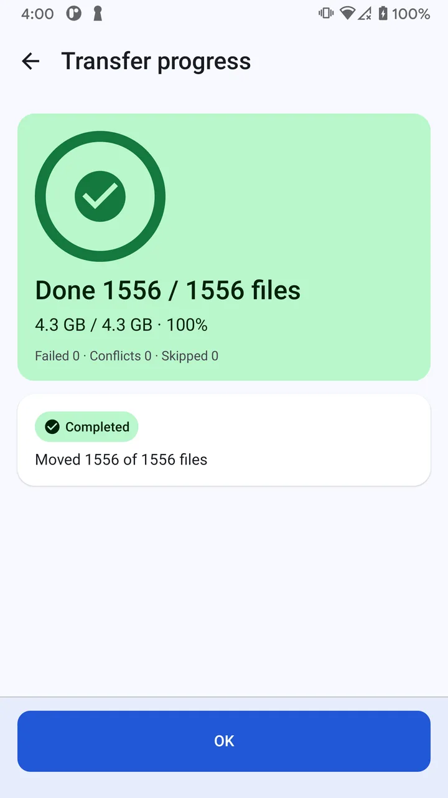

How to Move OneDrive Photos to Google Photos With an Old Pixel
If there is a Pixel 5 or older in a drawer at home, Google still backs up photos and videos from it without counting them against your storage. Meanwhile your OneDrive is full of photos. The idea is simple: get the OneDrive photos onto the Pixel, let Google Photos back them up from there, then clear them out of OneDrive.
It works, but three things catch people out. Only the very first Pixel keeps original quality for free. The files have to be backed up from the Pixel itself. And OneDrive does not hand the space back until you empty its recycle bin. This guide covers all three, with or without our app.
Which Pixels still get free backup
This is what Google's help pages say, checked on 25 November 2026.
| Phone | Free unlimited backup |
|---|---|
| Pixel (1st generation, 2016) | Unlimited in Original quality |
| Pixel 2 | Anything backed up after 16 January 2021 is saved in Storage saver, at no charge |
| Pixel 3 | Anything backed up after 31 January 2022 is saved in Storage saver, at no charge |
| Pixel 3a, 4, 4a, 5 | Unlimited in Storage saver. Original quality counts toward your storage |
| Pixel 5a, Pixel 6 and later | No free unlimited backup |
The details are under "Learn about Google Photos backup on your Pixel" on Choose the backup quality of your photos & videos. The short version is on About your Google Photos activity & storage, which limits the benefit to a Pixel 5 or earlier and to photos and videos "backed up from your device".
What Storage saver does to your photos
On a Pixel 2 through Pixel 5, the free backup is Storage saver, not the original file. Google describes it this way: photos are compressed, photos larger than 16 MP are resized to 16 MP, and videos above 1080p are resized to 1080p.
For ordinary phone snapshots most people accept that trade. For 4K video, or photos from a camera with a bigger sensor, the free copy is a smaller copy.
Check which setting the Pixel is on before you start. In Google Photos, tap your profile picture, then Google Photos settings, Backup, Photos & videos quality. On a Pixel 3a to 5, choosing Original quality uses your Google storage.
If the originals matter to you, keep them somewhere else as well, such as a computer or an external drive, before you delete anything for good.
Why the photos have to go through the Pixel
Google's wording is "backed up from your device". Dragging files into the Google Photos website from a computer is an ordinary upload, and so is backing up from a newer phone. That is why people keep an old Pixel plugged in as an upload box. Droid Life described the setup in 2021, using general sync apps such as FolderSync and Syncthing to feed the Pixel.
Where the files land on the Pixel matters too. Google Photos backs up the camera folder, DCIM/Camera, without being asked. Other folders are only backed up if you switch them on under Back up device folders, as Google explains here.
Doing it by hand
You do not need an app for this. With a computer and a USB cable:
- Download the photos from the OneDrive website to the computer.
- Connect the Pixel and copy them into
DCIM/Camera. - Leave the Pixel on Wi-Fi until Google Photos shows the backup is complete.
- Delete the photos from OneDrive, then empty the OneDrive recycle bin (see the last section).
For a few hundred photos this is perfectly reasonable. With a large library it gets tedious: the computer needs room for everything, and you are the one checking that each file arrived intact before you delete it from OneDrive.
Sync apps like the two mentioned above can automate parts of this. We have not tested them for this guide, so go by their own documentation.
Doing it with DriveSync
DriveSync is the Android app we make, built for this particular job, so take this section as coming from the people who wrote it. It runs on the Pixel and moves files directly between Microsoft and the phone. There is no DriveSync server in between and no account to create.
- Install DriveSync on the Pixel. You can explore it with sample files before signing in.
- Sign in to your personal Microsoft account through Microsoft's own sign-in page.
- Choose Images or Images + videos to move everything, or pick files and folders yourself.
- Leave the phone charging on Wi-Fi. Transfers keep running in the background.
Each file is copied into DCIM/Camera, then checked against the OneDrive copy by size and hash. Only after that check passes is the OneDrive copy removed. What arrives on the phone is the original file, byte for byte.

The limits you should know about:
- Free plan: up to 100 MB per file, three files at a time, with ads. Photos fit easily. Long or 4K videos often do not, and anything over 100 MB stays in OneDrive.
- Premium: a one-time purchase, not a subscription. Up to 4 GB per file, ten files at a time, no ads.
- Android version: saving straight to
DCIM/Cameraneeds Android 10 or later. The app itself runs on Android 8 or later. - Phone storage: the Pixel needs room for each batch. When Google Photos has finished backing up, use Free up space on this device in Google Photos and carry on with the next batch.

Last step: empty the OneDrive recycle bin
Whichever way you move the photos, deleting them from OneDrive only sends them to the OneDrive recycle bin. Microsoft counts items in the recycle bin toward your storage, so the "full" warning stays until the bin is emptied.
On a personal account you can restore deleted files for 30 days. To get the space back sooner, sign in at onedrive.com, open Recycle bin, select the items and delete them. The storage figure can take a little while to catch up.
Is it worth doing?
It suits you if you already own a Pixel 5 or older, most of your OneDrive is photos, and Storage saver quality is good enough (or you have a first-generation Pixel). If you need every original and have nowhere else to keep them, paying for storage is the simpler answer.
DriveSync is an independent app. It is not affiliated with or endorsed by Google or Microsoft.